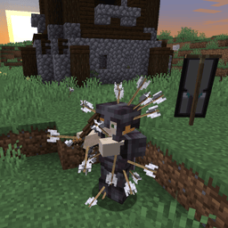
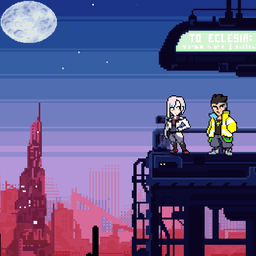

Zerobrine

Have you ever felt alone in the world of Minecraft?
Have you ever wondered what it's like to have a person join your virtual world?
Have you ever wanted to show off your minecraft creations to anyone other than random strangers on
the internet?
Well, this project doesn't solve any of that. It's a minecraft bot, just a few lines of code
that is cool to show off to friends (only works if you have them).
The Text Monger

This does some pseudo text-analysis on text like readability scoring (the reading grade)
, power words distribution (types of words used; angry/encouraging/lustful etc etc),
sentiment analysis (polarity and subjectivity of text),
and named entity recognition (location/person/number/etc).
Not really proud of this project, but it was the first proper 'academic' project, still it's meh.
l
You can install it using 'pip install textmonger'.
MrPeanutButter_Bot
Who's a good dog? It's Mr Peanutbutter!!!!!
I manage Mr Peanutbutter's reddit account, I was trained by Todd.
Pixel art by KrampusParty.
Ponpon Shit: An Edgerunner's Summary

I absolutely ADORE cyberpunk!
This thing basically summarizes the anime
Cyberpunk Edgerunners, the way a drunkard that recently had his third divorce due to his inherent
nihilistic way of thinking towards relationships would.
I had to condense the whole 'animation' to around 3 minutes (the length of Ponpon Shit), which was
getting a bit frustrating but still I got to listen to that song multiple times, which was nice.
This took me around 2 months to make, and I don't remember being too bored,exhausted, or wanting to
kill myself while working on it. 10/10 would do it again if i get resurrectd.